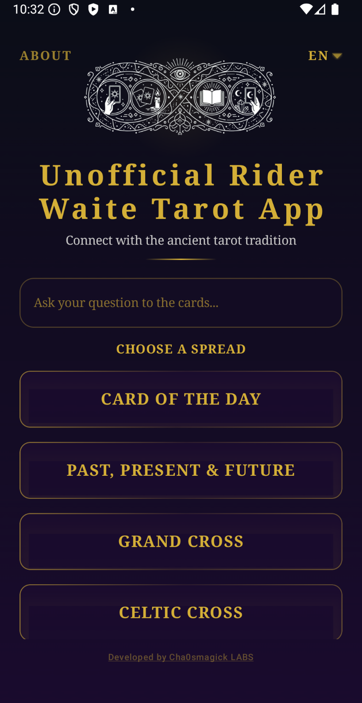
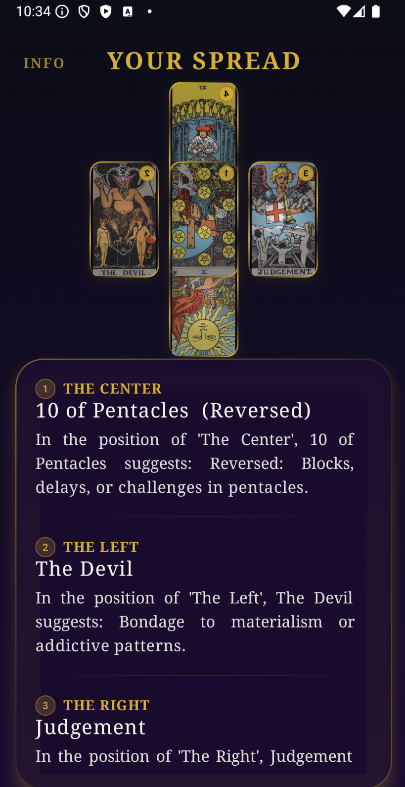
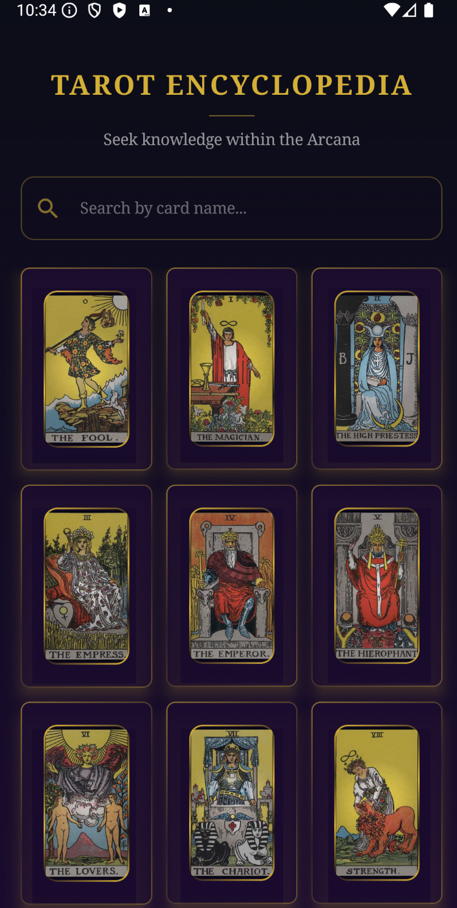

Unofficial Rider Waite Tarot
Full Rider-Waite deck offline with 6 spreads, encyclopedia, and 7-language support.
Not satisfied? Full refund within 2 hours on Google Play. No questions asked.



What Is Unofficial Rider Waite Tarot? Your Complete Offline Tarot Companion
The Rider-Waite deck is the most iconic tarot system in the world — a visual language of archetypes that has guided readers for over a century. The Unofficial Rider Waite Tarot brings every card, every symbol, and every spread to your device in a premium, offline experience designed for deep contemplation. No ads. No subscriptions. No internet required. Just you, the cards, and the wisdom they hold.
Complete Deck, Complete Wisdom
- Full 78-Card Rider-Waite Deck: Major Arcana and four suits — Cups, Pentacles, Swords, Wands. Every card rendered in high-quality illustration.
- Upright & Reversed Meanings: Each card includes detailed upright and reversed interpretations, keywords, and symbolic breakdowns.
- 6 Professional Spreads: Card of the Day, Past-Present-Future, Grand Cross, Celtic Cross, and more. Enter a question and receive structured insights instantly.
- Searchable Encyclopedia: Built-in tarot reference with fast search, cross-referenced symbolism, and multilingual terminology.
- Reading History: Every reading is saved locally. Revisit past spreads and track your growth.
- Customizable Card Backs: Choose from multiple designs to personalize your experience.
Available in 7 Languages
English, Spanish, French, German, Italian, Hindi, and Chinese (EN/ES/FR/DE/IT/HI/ZH). Card names, explanations, and interface labels adapt to your language.
Who Is This Tarot App For?
- Tarot Beginners who want to learn the Rider-Waite system with clear meanings and guided spreads.
- Experienced Readers who need a reliable, portable deck with multiple spread options.
- Multilingual Seekers who want to study tarot across languages.
Technical Specifications
- Full 78-card Rider-Waite deck
- 6 professional spread layouts
- 7 language translations
- Searchable encyclopedia with cross-referenced symbolism
- Fully offline — no internet required
- Zero ads, zero trackers, zero data collection
- Android 6.0+ | One-time purchase — $9.99 USD
Frequently Asked Questions
Does this app require an internet connection?
No. The entire deck, encyclopedia, and all features work completely offline. Your practice stays private.
What spreads are available?
The app includes Card of the Day, Past-Present-Future, Grand Cross, and Celtic Cross, among others.
Can I save my readings?
Yes. All readings are saved to your local history for later reflection.
Is this the official Rider-Waite deck?
This is an unofficial tribute featuring high-quality illustrations inspired by the Rider-Waite tradition.
One-Time Purchase. Lifetime Access.
Download the Unofficial Rider Waite Tarot now for a single payment of $9.99 USD. No subscriptions, no in-app purchases. The cards are ready. Are you?
A Meanings Book Is Not an Oracle
The Rider-Waite deck comes with a sixty-year advantage and a strange liability. The advantage is that the imagery is unusually legible, so a beginner can look at a card and see something before learning any symbolism. The liability is that once the imagery is legible, the meanings book becomes redundant, and a great many readings are now being produced by a person recognising an image rather than by a person reading a question. What the deck is genuinely good for, what a layout adds, and where a record is worth more than either, are the three things below.
The range of the set is its main argument
Seventy-eight cards, four suits of sixteen minors, twenty-two majors, and a deliberately narrow range of subject matter: fights, money, work, home, small troubles, small pleasures. The complete list is worth having, and the major arcana on its own is the part that carries the long arc.
That range is the deck's real strength and it is why it works so much better for ordinary questions than for large ones. A card about a missed message is well designed for a question about a missed message. The suits explained is the practical version of why the minor arcana does most of the daily work, and a first reading step by step is the sequence that respects the range.
Recognising versus adivining
Two different things happen when a card is turned over. One is recognition: the image matches something you already know, and the knowledge is in the book or in the tradition. The other is inference: the image does not match anything, and you are reading the card as you would read a stranger. The first is reliable and uninteresting. The second is where a reading gets its value and where it starts going wrong.
Intuitive against meanings-based reading is the honest comparison, and how to actually read the cards is the mechanics. Combination techniques is the part that makes a spread more than a row of separate opinions, and the advanced version is worth reading only after the basic version has become boring.
What a layout adds
A single card answers a yes-or-no question. Everything wider exists to force you to look at the same question from a fixed number of positions, and the value is in the positions, not the extra cards. Two cards is the smallest useful layout. The Celtic Cross is the famous one and the position meanings are worth learning rather than memorising.
For specific questions, love and relationships and yes-or-no are the two layouts people actually reach for, and both are well served by the deck's narrow range. The full spread reference and the beginner's version cover the rest. Pathworking is the other direction entirely, where the deck supplies images for a deliberate sequence rather than answers to a question.
Reversals, and the question they actually raise
Reversed cards are read as blocked or inverted, and the meaning is derived by analogy from the upright. That derivation is where the practice gets soft, because it means a reversed card can be made to mean almost anything by choosing the right analogy. The reversed meanings guide is a useful list, and the more useful question is whether you would have predicted the reversal rather than whether you can find a reading for it.
The two cards that generate disproportionate anxiety are the Death card and the reversed Tower, and both are worth reading as a pair. Why people fear the Death card and the card itself are the sensible treatment. Neither of them means anything has gone badly wrong; they are images of ending and of sudden change, and a deck that only produced good news would be a worse instrument than one that does not.
The record is where the value accumulates
The single most reliable finding about tarot practice is that the readings which people remember years later are the ones they wrote down. A reading that is not recorded leaves a mood; a reading that is recorded becomes a data point about your own patterns. The daily draw as a practice is the minimal version, and a daily routine is the version that produces a usable archive after six months.
Two habits make the archive worth having. One is writing the question before the shuffle. The other is recording what you would have done next without the card, which is the column that stops the deck from taking credit. A two-hundred-reading challenge is the way to find out whether your memory is more reliable than you think. Tarot as a thinking technology is the argument for what this is doing.
The physical deck, and the app question
A Rider-Waite deck is a facsimile of a deck published in 1909 whose images descend from an earlier, quite different deck, and the history is worth knowing because it explains the composition. Where the cards come from covers that, and which deck to buy is the practical version.
The digital and physical versions are not equivalent, and the difference is worth naming. Shuffling has a physical cost that functions as a decision point, and a screen does not have it. That is the argument for a physical deck, not a mystical one. App comparisons and offline options are useful if you travel, and this app's review is fair about the loss. Care and storage sounds dull and is the reason most decks look damaged within a year, and keeping the deck is a small ritual that makes it more likely you reach for it.
This deck is a twenty-first-century Rider-Waite, not a nineteenth-century one, and the difference is worth a paragraph in your own notes. The beginner's guide and the correspondence layer are the two references to read first, and the correspondence layer is genuinely optional rather than foundational.
Thirty entries from the library
- tarot
-
How to Read Tarot Cards: A Rider-Waite Method — A working method for reading tarot: why the Rider-Waite deck was built to be taught, how to learn it in order, and how to keep a reading anchored to something…
Rider Waite Tarot for Beginners: Complete Guide to...
Tarot Card Combinations: How to Read Multiple Cards Together
Complete Guide to Tarot Card Meanings: Major Arcana Explained
The 78 Tarot Cards: Complete Reference List (2026)
Why People Fear the Death Card (And Why They
Celtic Cross Tarot Spread: Complete Guide to All 10
Tarot Card Meaning: Essential Guide for Beginners (2026)
Yes or No Tarot Reading: How to Get Clear
10 Best Tarot Apps for Android in 2026: Honest
Best Tarot Decks: A Collector's Guide (2026)
Rider Waite Tarot App Review: Best Offline Tarot Reader
Tarot and Astrology Correspondences: Mapping Major Arcana to Planets
Tarot Card Care: Preservation & Storage Guide
Tarot Card Reading Spreads & Techniques: Complete Guide
Tarot Pathworking: Complete Guided Visualization Protocol for All 22
How to Read Tarot Cards: Complete Step-by-Step Guide for
The Four Tarot Suits Explained: Cups, Wands, Swords &
Best Offline Tarot App for Android (2026): No Subscription
How to Build a Daily Tarot Practice: Complete Morning
What Does My Ex Think of Me? The 5-Card
The Fool's Journey: A Tarot Roadmap Through the Major
Intuitive vs Traditional Tarot Reading: Complete Guide to Blending
200 Tarot Readings in 6 Months: What I Learned
Tarot Card Reversed Meanings: Complete Interpretation Protocol
Tarot Deck Cleaning and Energetic Maintenance: Complete Protocol for
Creating Magical Servitors from Tarot Archetypes: Complete Protocol with
Tarot Spreads for Beginners: Celtic Cross, 3-Card & More
5 Best Tarot Spreads for Love and Relationships: Deepen
Two-Card Tarot Spread: The Quick Answer Method (2026)
Death Tarot Card Meaning: Yes or No, Reversed &
Tarot as Gnosis Technology: Complete Protocol for Altered States
Tarot Card Combinations: Advanced Interpretation Techniques
Tarot Daily Draw: Meaning & Practice Guide (2026)
Tarot History & Origins: From Ancient Egypt to Modern
Using Tarot for Intention Setting and Manifestation: Complete Protocol